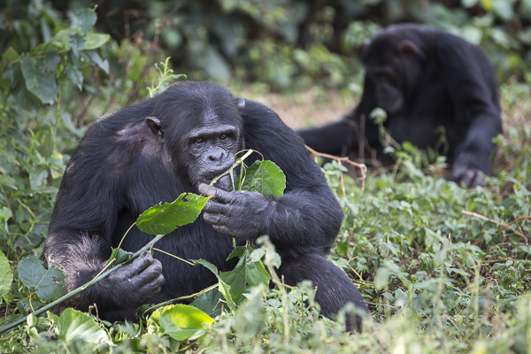

The great apes are:
gorillas chimps orangutansGorillas: strongest and most powerful. one gorilla learnd to use more then 500 words in american sign language.
Chimps: cleverest and can make shoes.
Orangutans: are escape artists. an orangutan named bob broke out of three different cages including one that successfully held lins and grizzle bears.
Monkeys are omnivors they eat leaves grass nuts fruit insects and small animals fruit insects and small animals like ants. like humans monkeys can judge distances and som even have thumbs which helps them in their habitat and it helps them to groom ech ather. apes are the most inteligentbut Chimpanzees and Goillas are the smartest Gorillas are the strongest and orangutans are the most acrobatic. chimps make frendships that last for years even when separated for a long period of time they know ech otherand hug. a male orangutan's territory is about two mile's far and the male shouts a warning to protect its famiy from other orangutan's it roars and groans for about 5 minits